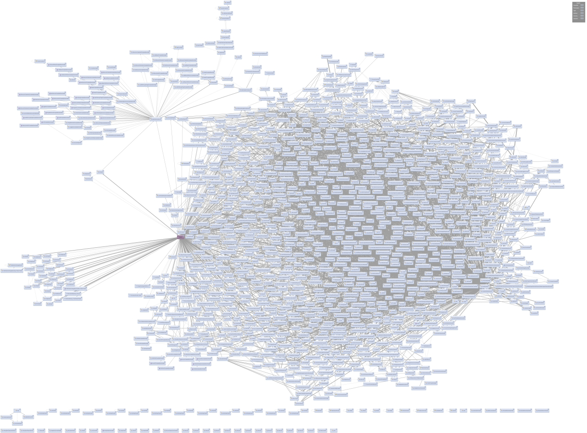

Reducing dependency tanglements
One of the most problematic aspects of legacy code is its tendency to be excessively tangled, meaning that classes or projects within the code have too many dependencies to other classes or projects. This, in turn, makes code difficult and time-consuming to refactor and reuse since classes are tightly connected (“tangled”) to many other classes.
 Tanglement in enterprise projects can even take on artistic aspects, as illustrated in the “Big Ball of Yarn” image to the left (see Big Ball of Yarn for the original article where the image occurred or The Enterprise Dependency for another interesting look at an overly tangled codebase.
Tanglement in enterprise projects can even take on artistic aspects, as illustrated in the “Big Ball of Yarn” image to the left (see Big Ball of Yarn for the original article where the image occurred or The Enterprise Dependency for another interesting look at an overly tangled codebase.
While the images may seem somewhat hilarious, the situation is far from unique in regards to enterprise codebases for projects with some size. Refactoring a single class in the illustrated codebase is going to affect a multitude of other classes in a ripple-like effect caused by the excessive tanglement. That - in turn - will cost time and money.
One of the most important aspects of large-scale enterprise development is therefore to reduce tanglement in a structured way - meaning that the same approach can be used in small as well as large projects. It is really a pain to change development patterns as an enterprise codebase grows. Also, from a business owner’s perspective, it would be a fair bet to claim little interest in spending lots of money to refactor codebases with no new features implemented.
Enforcing proper dependencies
 The codestyle project within Nazgul Tools supplies enforcement rules, which - if in operation - prevents developers from importing implementation project dependencies into other implementation projects. It is recommended to import dependencies only on API/SPI or Model projects. Please refer to the Nazgul Tools Codestyle project for further details.
The Anglerfish-lookalike dependency, as shown in the image to the right (see Anglerfish dependency for the image orginial), is another frightful example of legacy tanglements which can be avoided by using the Nazgul Tools Codestyle enforcement rules. They are recommended.
{kind=link}